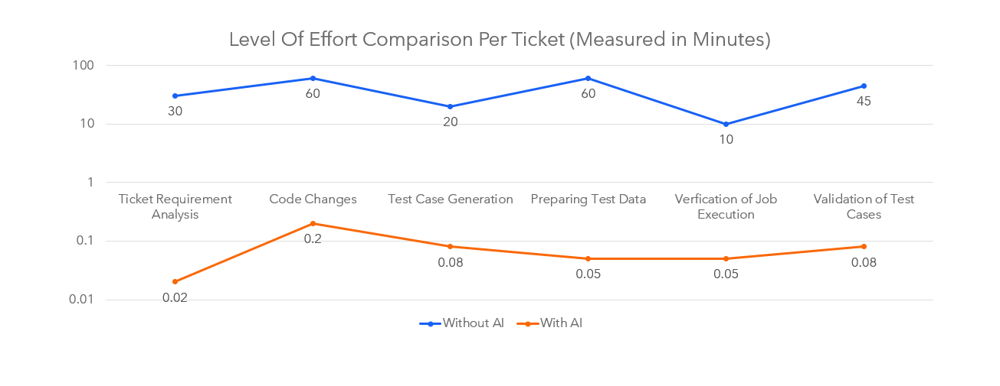

Barathwaj Maadhavan
Build. Automate. Simplify.
End to End Development Automation Agent
End-to-end automated development pipeline for ETL modifications.
Overview
To address the inefficiency of long turnaround times – often taking two to three days for minor ETL modifications – we architected and deployed an end-to-end automated development pipeline that accelerates the lifecycle from requirement gathering to final validation.
The Challenge
Engineering teams were spending significant time on low-complexity ETL changes. Manual effort was consuming ~40% of engineering time, and delivery cycles averaged 2–3 days for simple modifications.
How It Works
At the core of this system, we utilized n8n for orchestration, hosted on a cloud-based VPC, while the AI agents responsible for code intelligence and processing reside within a separate, secure internal network. To facilitate communication between these isolated environments, we implemented an asynchronous messaging pattern using an S3 bucket as a central exchange, leveraging JSON files to pass task payloads and state data between the two networks.
The workflow proceeds as follows:
- Requirement Extraction – The n8n-based agent extracts requirements and ticket details from our RMT platform.
- Code Intelligence – The End to End Development Automation agent identifies and implements the necessary logic or schema modifications.
- Payload Generation – A comprehensive payload containing the file path, modified line numbers, and requirement context is generated.
- Validation Layer – This triggers a multi-agent, sequential workflow using LangGraph, which programmatically identifies affected SQL jobs and their source-to-target dependencies.
- Synthetic Data & Testing – The system extracts representative schema data, generates synthetic datasets to mirror production environments, and executes the jobs.
- Verification – Rigorous checks are performed for column integrity and data flow compliance.
- Reporting & Approval – Results are synthesized into a detailed report, pushed back to n8n, which dispatches a confirmation email for human review and approval.

Results & Impact
- over 90% reduction in manual effort on low-complexity tickets.
- 3x faster delivery cycles – from days to hours.
- 20+ tickets handled autonomously per month.
- 75% accuracy on first-pass code generation.
Key Learnings
Building this agent reinforced the importance of robust validation pipelines. Without reliable testing, autonomous code generation introduces risk. I also learned that human oversight remains critical – the agent works best as a co-pilot, not a replacement. The asynchronous S3-based communication pattern proved essential for maintaining security between isolated networks.